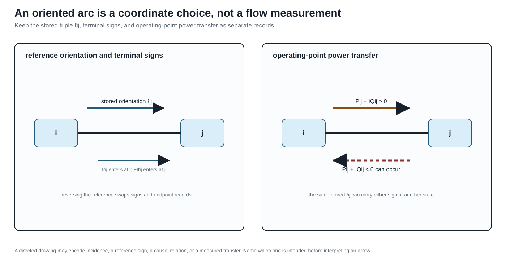

Orientation, terminal quantities, and power transfer
Page status: foundational definitions and terminology.
Why an arrow is ambiguous
Power-system diagrams, data formats, and optimization models use arrows for several different purposes. A line drawn from $i$ to $j$ can mean an arbitrary stored orientation, a terminal-current sign convention, a positive reference direction for active power, an observed operating-point transfer, or a genuinely one-way admissible action. These meanings must not be inferred from one another.
| Direction concept | Mathematical data | Dependence |
|---|---|---|
| physical incidence | unordered endpoints $\partial\ell=\{i,j\}$ | equipment model |
| reference orientation | one selected arc $o(\ell)=\ell ij$ | arbitrary coordinate choice |
| terminal-current sign | current defined into or out of each terminal | modelling convention |
| operating-point transfer | sign of $P_{\ell ij}$ at a solution | voltage, state, and controls |
| causal or permitted direction | asymmetric control or feasible relation | physical or study semantics |
A conventional passive AC line is therefore an undirected physical connection with an orientation, not intrinsically a directed physical edge.
An arrow on a passive branch normally fixes storage order, terminal names, or a positive reference. It does not predict the sign of current or active power at a solution.
The terminal-arc double cover
For every two-terminal element $\ell$ with $\partial\ell=\{i,j\}$, introduce the two terminal arcs
\[\overrightarrow{\mathcal L} = \{\ell ij,\ell ji:\ell\in\mathcal L\}.\]
The reversal map
\[\rho:\overrightarrow{\mathcal L} \rightarrow\overrightarrow{\mathcal L}, \qquad \rho(\ell ij)=\ell ji,\]
is an involution with no fixed points. A reference orientation chooses one arc from each pair; the bidirected terminal-arc view retains both. The line remains one member of $\mathcal L$.
With the book's incidence convention, the selected arc $\ell ij$ gives $-1$ at $i$ and $+1$ at $j$. Choosing $\ell ji$ instead negates the column. Incidence rank, the undirected cycle space, and physical solutions are invariant under that coordinate change, while signed cycle coordinates change accordingly.
A stored orientation is not an operating direction
The stored triple $\ell ij$ determines which endpoint is written first. It does not imply any of the statements
\[P_{\ell ij}\ge0, \qquad |P_{\ell ij}|\ge|P_{\ell ji}|, \qquad \text{or}\qquad \ell\text{ can transfer only from }i\text{ to }j.\]
Those are operating or device claims requiring separate equations. Active power can reverse between operating points, and in an unbalanced multiconductor model its sign can differ by conductor.
Reversing the stored orientation swaps end-specific records:
\[(\mathbf N_{\ell i},\mathbf N_{\ell j}, \mathbf Y^{\mathrm{sh}}_{\ell ij}, \mathbf Y^{\mathrm{sh}}_{\ell ji}, \mathbf I_{\ell ij},\mathbf I_{\ell ji}) \longleftrightarrow (\mathbf N_{\ell j},\mathbf N_{\ell i}, \mathbf Y^{\mathrm{sh}}_{\ell ji}, \mathbf Y^{\mathrm{sh}}_{\ell ij}, \mathbf I_{\ell ji},\mathbf I_{\ell ij}).\]
It does not blindly negate both terminal currents. Antisymmetry belongs to a particular internal series-current coordinate, not to every terminal quantity.
Rooted-tree orientation is a derived view
When an active network is radial, practitioners often orient every branch from the feeder source toward the leaves and call the resulting arcs upstream and downstream. This is useful, but it is not the stored orientation $\ell ij$ and it is not an intrinsic direction of a passive line.
For an active identified graph $G_M^\sigma$ and a selected source root $r$ in each component, a rooted-tree view adds a parent map
\[\operatorname{par}_{\sigma,r}:V\setminus\{r\}\longrightarrow V\]
defined by the unique root-to-node path. The resulting parent-to-child arcs, depths, ancestors and descendants are a state- and root-dependent algorithmic view. They are appropriate for feeder recursions, backward/ forward sweeps and radial branch-flow notation, but they are not new asset attributes.
A parent-to-child arc is not an operating power-flow direction. Closing a tie can create a chord, reverse power can change the sign of $P_{\ell ij}$, and a different source or spanning tree can change the parent map without changing any line asset.
If $G_M^\sigma$ is meshed, choose a spanning forest only if an algorithm needs one. Tree edges then receive parent-child roles, while chords retain their cycle equations and must not be called upstream or downstream without a separate convention. A spanning-tree orientation is therefore a coordinate or algorithmic choice, not a claim that the physical network is radial.

The figure makes the sign discipline explicit: reversing $\ell_{ij}$ changes the coordinate convention, while changing the operating point can reverse $P_{\ell ij}$ without changing the stored asset orientation.
Series current and terminal power
For a reciprocal scalar series element, use current into the element at each terminal:
\[I^{\mathrm s}_{\ell ij} =Y_\ell(U_i-U_j), \qquad I^{\mathrm s}_{\ell ji} =-I^{\mathrm s}_{\ell ij}.\]
The corresponding terminal complex-power injections are
\[S_{\ell ij}=U_i(I^{\mathrm s}_{\ell ij})^*, \qquad S_{\ell ji}=U_j(I^{\mathrm s}_{\ell ji})^*.\]
Although series current is antisymmetric, terminal power is not conserved:
\[S_{\ell ij}+S_{\ell ji} =(U_i-U_j)(I^{\mathrm s}_{\ell ij})^* =Z_\ell|I^{\mathrm s}_{\ell ij}|^2.\]
For $Z_\ell=R_\ell+\mathrm jX_\ell$ with $R_\ell\ge0$, the active-power absorption is
\[P_{\ell ij}+P_{\ell ji} =R_\ell|I^{\mathrm s}_{\ell ij}|^2\ge0.\]
A lossy branch therefore owns two terminal powers and a loss relation, not one conserved scalar flow. Calling $S_{\ell ij}$ the power flow from $i$ is a useful shorthand only after its terminal sign convention is fixed.
The familiar single-flow picture is recovered in a declared lossless approximation, where $P_{\ell ij}=-P_{\ell ji}$. It should be presented as a special collapse rather than the semantics of a general edge.
Opposite series currents do not imply opposite terminal powers. Voltage differs across the impedance, so the two terminal powers sum to the element's complex absorption. A nominal-$\pi$ factor can additionally have terminal currents that are not negatives because it contains shunts.
Nominal-pi elements
For a scalar nominal-$\pi$ element, define
\[\begin{aligned} I_{\ell ij} &=I^{\mathrm s}_{\ell ij} +Y^{\mathrm{sh}}_{\ell ij}U_i,\\ I_{\ell ji} &=-I^{\mathrm s}_{\ell ij} +Y^{\mathrm{sh}}_{\ell ji}U_j. \end{aligned}\]
Then
\[I_{\ell ij}+I_{\ell ji} =Y^{\mathrm{sh}}_{\ell ij}U_i +Y^{\mathrm{sh}}_{\ell ji}U_j,\]
which is generally nonzero. Current has not been destroyed. It has been diverted through shunt paths retained inside the composite line factor. A conductive shunt absorbs active power, while inductive or capacitive shunts exchange reactive power.
The terminal-power balance is
\[\begin{aligned} S_{\ell ij}+S_{\ell ji} =\;&Z_\ell|I^{\mathrm s}_{\ell ij}|^2\\ &+|U_i|^2(Y^{\mathrm{sh}}_{\ell ij})^* +|U_j|^2(Y^{\mathrm{sh}}_{\ell ji})^*. \end{aligned}\]
For a multiconductor member the same distinction is expressed by the complete two-end primitive
\[\begin{bmatrix} \mathbf I_{\ell ij}\\ \mathbf I_{\ell ji} \end{bmatrix} = \begin{bmatrix} \mathbf Y_\ell+\mathbf Y^{\mathrm{sh}}_{\ell ij}&-\mathbf Y_\ell\\ -\mathbf Y_\ell&\mathbf Y_\ell+\mathbf Y^{\mathrm{sh}}_{\ell ji} \end{bmatrix} \begin{bmatrix} \mathbf U_i[\mathbf N_{\ell i}]\\ \mathbf U_j[\mathbf N_{\ell j}] \end{bmatrix}.\]
Full coupling makes a story about independent power commodities travelling on individual conductor edges still less reliable. The invariant object is the declared multiport relation and its terminal power balance.
Internal versus explicit shunts
The same fixed nominal-$\pi$ behaviour can be factorized in two ways:
- one composite two-port line factor containing series and shunt terms;
- one series factor plus two explicit shunt factors attached to the endpoint junctions.
In the second factorization the series currents are negatives, and the shunt factors separately account for current to ground or neutral. In the first, the composite line's terminal currents are not negatives. Moving between the two is an exact compilation only when terminal coordinates, grounding scope, parameters, limits, ownership, and provenance are mapped explicitly.
This is why statements such as current is conserved on every edge are representation dependent. KCL is conserved at the complete network level; which internal path is called an edge depends on the factorization.
When a directed graph is physical
A directed edge is appropriate when order is intrinsic to the represented relation, for example:
- a one-way communication or control dependency;
- a protection logic dependency;
- a device with a genuinely asymmetric admissible transfer set;
- a study graph of causal or optimization dependencies.
Even then, a multiport factor may be more faithful than a directed ordinary edge. A controllable converter can have oriented information flow, terminal power variables at several ports, losses, and bidirectional feasible operating regions at the same time.
Direction contract used here
An arrow in this book is interpreted through the five direction concepts above. Unqualified phrases such as directed line, power on the edge, and reverse current are therefore replaced by the physical incidence, stored orientation, terminal quantity, or operating-point statement actually meant.